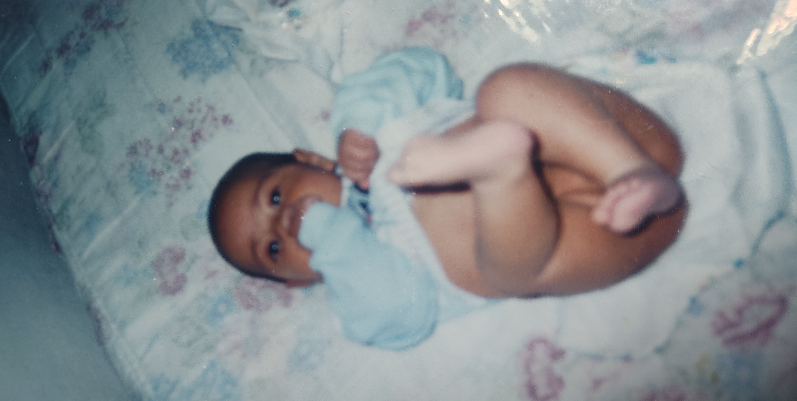
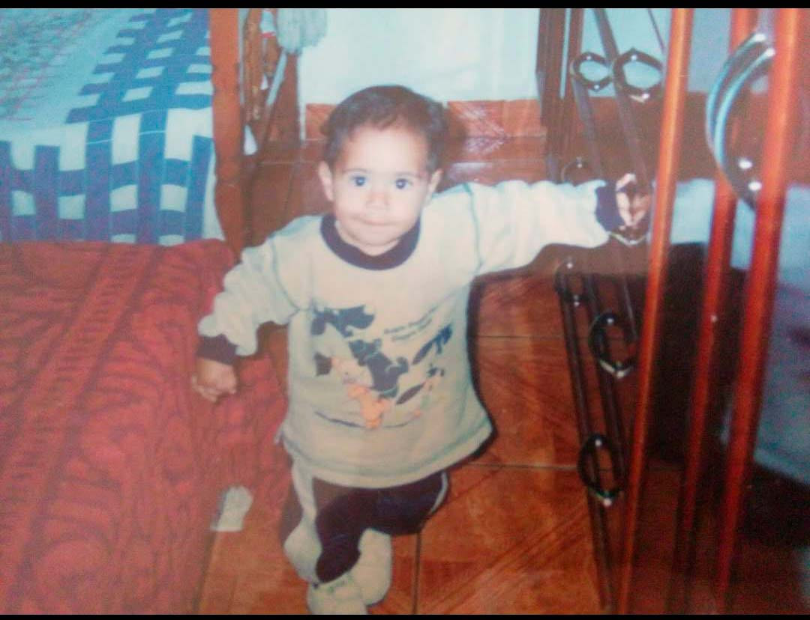

Eu bebê

Babyshark

Eis que em 18/04/2000 nasce, este que vos fala, Gabriel Genovez de Assis. Minha mãe sempre disse que eu nunca dei trabalho pra ela, sempre fui muito sorridente e alegre.
Foto de bombeiro na escola
KKKKK Essa foto foi tirada no 4°Ano do ensino fundamental; "Era pra eu sorrir" mas o fotográfo me zoou porquê eu tinha "janelinha" ai eu decidi ficar sério. 👺